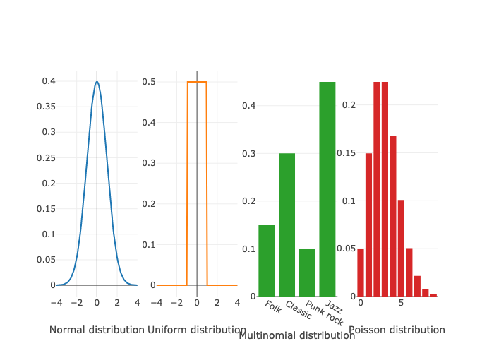
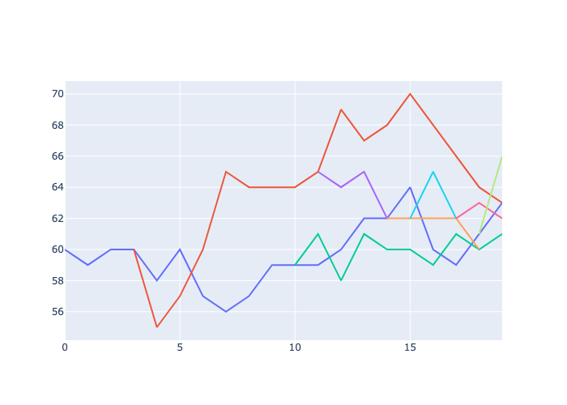
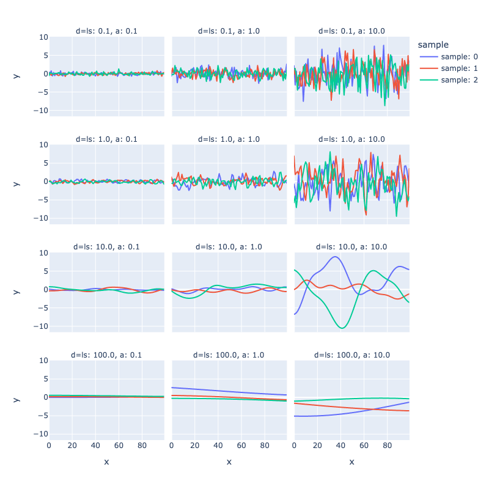
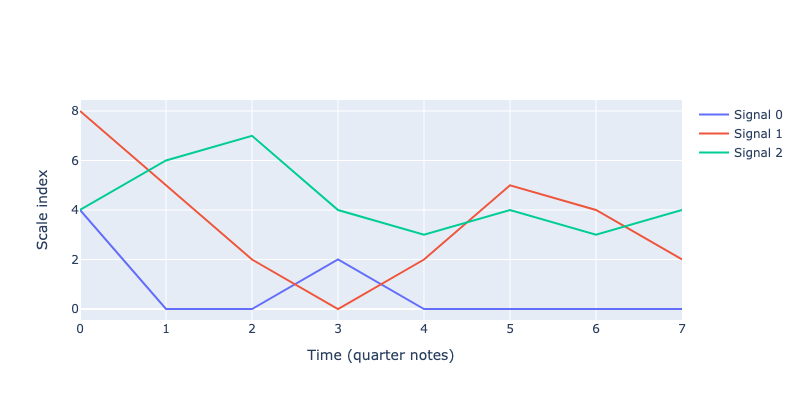
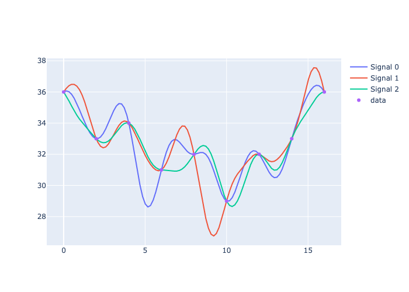
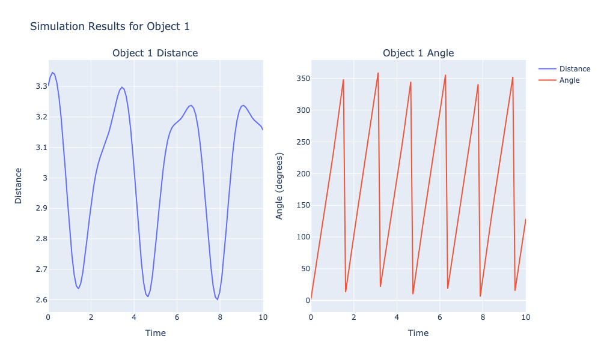
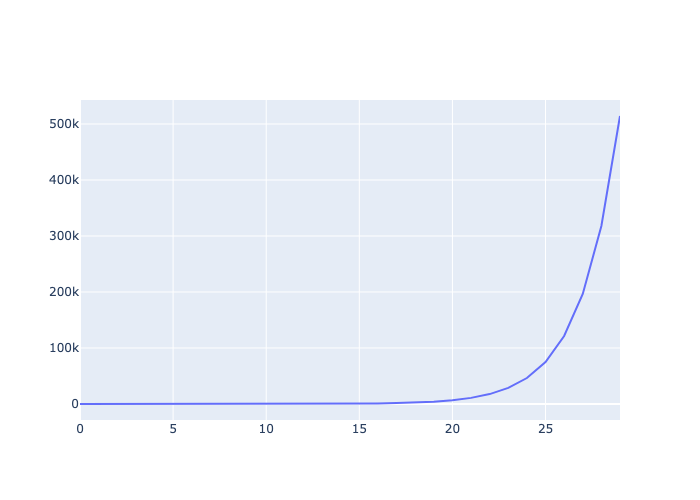
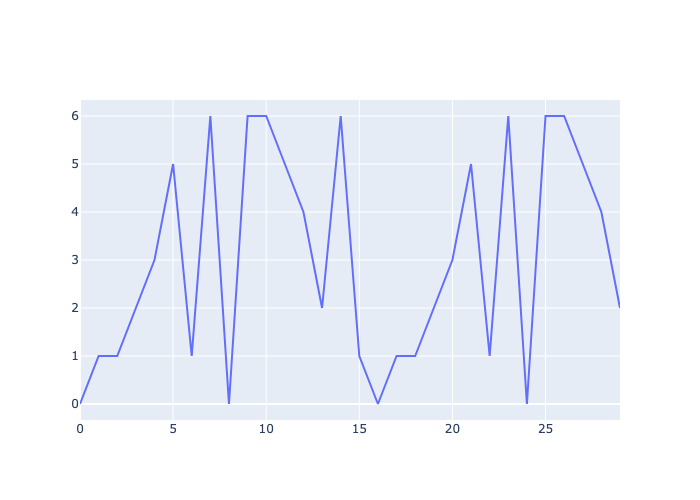

5. Walks¶
Random and kernel walks represent fascinating techniques that have found applications in various fields. Each step of a walk is a consequence of the previous state, creating coherent yet unpredictable progressions. Walks have been embraced by composers and sound artists to wander through new territories of algorithmic music. Iannis Xenakis, a composer and architect, is perhaps one of the most renowned composers to integrate random processes, including random walks, into his compositions. Works like Mikka and Epeï are seminal examples where randomized methods contribute to the structural foundation of the music. Karlheinz Stockhausen and his work with controlled randomness and serial techniques also touch upon concepts akin to random walks. His compositions, such as Klavierstück XI, employ a form of controlled chance that dictates the sequence of musical events, offering a multitude of possible paths through the piece.
The application of random walks in music composition involves generating sequences of musical elements, usually pitches and sequences, where each element is selected based on a combination of random choice and a set of rules or conditions influenced by previous elements. This approach allows composers to explore new forms of musical structure and texture, creating pieces that can vary greatly with each performance or realization while maintaining an underlying coherence.
In this section, we will also cover kernel walks, an innovative technique akin to random walks. This approach dig into well-known statistical objects named Gaussian processes to generate randomly oscillating paths. Most interestingly, kernel walks can be forced to pass through predefined points, and create melodies wandering around predefined progressions.
Some walks can offer perfectly predictable, although intricate patterns. An example is the movements of planets in solar systems. Imagine a planet orbiting the sun with a circular orbit. The distance from the sun is steady, an the angle grows linearly from 0 to 360, then goes back to zero to create a saw wave. Then a moon orbits the planet, then a moon orbits the moon, and so on. The movements are predictable, but the periodic shape can create interestic patterns. Celestial walks are also part of Djalgo.
Finally, walk are additive and multiplicative. You can, at will, add up a random walk to a celestial walk.
Random walks¶
A random walk is a mathematical process where each step is a random choice relative to the one preceeding it. Mathematician call them Markov chains, named after mathematician Andrey Markov. The random choice can be as simple as a coin flip: if it goes tail, you take a diagional step left. Heads, a diagonal step on right. Repeat the process over and over and you obtain a random walk. On average, you should walk ahead, but in fact, you’ll probably derive from a straight path. The concept of randomness was introduced in Minimalism, but we didn’t really dig in its meaning.
Understanding randomness¶
A mathematical function using a probability distribution is named a stochastic function. The concept of randomness is often misunderstood. It’s not about everything being possible without constraints. When we talk about selecting a random number, the process is not as open-ended as it might seem. When you flip a coin, its either heads or tails (or, rarely, the edge…).
Randomness is structured by probability distributions, a collection of mathematical functions structuring randomness and approximate processes underlying a reality too complex to be perfectly predictable. The coin toss is a binomial distribution: it’s either true or false. Another familiar example is the Normal distribution, known for its bell-shaped curve. When we sample from this distribution, values near the mean (center of the curve) are more likely to occur than those far from it, say, more than 4 units away or less than -4 units from the mean. The Normal distribution is characterized by two parameters: the mean, which locates the center of the curve, and the standard deviation, which determines the width of the curve. The height of a population can have a mean and a standard deviation.
There are numerous probability distributions, catering to different types of data. Continuous values, for instance, are often modelled using the Normal distribution, but also uniform distributions, where the likelihood of selecting any number within a specified range is exactly the same. This means that every number has an equal chance of being chosen, ensuring a flat distribution of probabilities across the entire range. Discrete data, such as categorical outcomes in music genres, can be represented by the multinomial distribution, which is described by a set of probabilities summing to 1. The Poisson distribution produces integer, useful for counting occurrences. Mathematicians have been working on probability distributions for centuries, and are still creating new ones, and exploring fascinating properties of existing ones.
Understanding these distributions helps in contextualizing randomness, especially in creative domains like music, where generating random rhythms involves selecting from a defined range of possibilities according to a specific probability distribution. This structured approach to randomness allows for the generation of diverse and interesting rhythmic patterns within a coherent framework.
[1]:
import plotly.subplots as sp
import plotly.graph_objects as go
import numpy as np
import scipy
# Normal distribution
x_norm = np.linspace(-4, 4, 100)
y_norm = scipy.stats.norm.pdf(x_norm, 0, 1) # normal distribution with 0 mean and 1 standard deviation
# Uniform distribution
x_unif = np.linspace(-4, 4, 100)
y_unif = scipy.stats.uniform.pdf(x_unif, -1, 2) # uniform distribution from -1, spanning 2
# Multinomial distribution
n = 10
categories = ['Folk', 'Classic', 'Punk rock', 'Jazz']
p = [0.15, 0.30, 0.10, 0.45]
# Poisson distribution
mu = 3
y_poisson = scipy.stats.poisson.pmf(np.arange(10), mu) # distribution de Poisson
# Figure
fig = sp.make_subplots(rows=1, cols=4)
fig.add_trace(go.Scatter(x=x_norm, y=y_norm, mode='lines'), row=1, col=1)
fig.update_xaxes(title_text="Normal distribution", row=1, col=1)
fig.add_trace(go.Scatter(x=x_unif, y=y_unif, mode='lines'), row=1, col=2)
fig.update_xaxes(title_text="Uniform distribution", row=1, col=2)
fig.add_trace(go.Bar(x=categories, y=p), row=1, col=3)
fig.update_xaxes(title_text="Multinomial distribution", row=1, col=3)
fig.add_trace(go.Bar(x=np.arange(10), y=y_poisson), row=1, col=4)
fig.update_xaxes(title_text="Poisson distribution", row=1, col=4)
fig.update_layout(showlegend=False, template='none')
fig.write_image("_images/probability-distributions.png")

Logic of the random walk¶
Random walks are available in Djalgo in file walk.py. From there, there are two options to generate walks. The first one, Chain, is a classic random walk, and the second, Kernel, is Gaussian processes generator, which will be discussed later in this section.
The random walk generator takes several of arguments. The walk_range argument takes a list of the minimum and maximum numbers to confine the walk (to create a bounded random walk). For instance, if you aim at restraining the walk between -10 and 10, you would enter walk_range=[-10, 10]. The walk_probability can take a list of numbers, for instance [-1, 0, 1] if you aim at generating steps of -1, 0 and 1. It can also take a Scipy probability
distribution function, for instance scipy.stats.norm(loc=0, scale=1), where loc and scale are the mean and the standard deviation. The length argument specifies the number of steps. The round_to argument, with default None, rounds stepping to a given decimal.
Djalgo has the ability to randomly branch a walk. When a walk is branched, a new walk is created and wanders on it own. The probability to branch is specified from 0 to 1 in the branching_probability argument. Conversely, merging_probability is the probability to merge random walks when they collide. If round_to is not triggered on, there is virtually no chance that branches collide.
Example¶
I’d like to generate a random walk through pitches from C2 to C8, starting at C4. MIDI pitch numbers can be recovered using Djalgo’s cde_to_midi utility function.
[2]:
import djalgo as dj
print('C2:', dj.utils.cde_to_midi('C2'))
print('C4:', dj.utils.cde_to_midi('C4'))
print('C8:', dj.utils.cde_to_midi('C8'))
C2: 36
C4: 60
C8: 108
The random walk will be conducted between numbers 36 to 108, starting at 60. Through the walk, each step will branch with a probability of 0.1 and when branches fall to the same pitch, they will merge with a probability of 0.9.
[3]:
rw = dj.walk.Chain(
walk_range=[36, 108], walk_start=60, walk_probability=scipy.stats.norm(loc=0, scale=2),
round_to = 0, branching_probability=0.1, merging_probability=0.9
)
rw
[3]:
<djalgo.walk.Chain at 0x126ac33b0>
The rw is a random walk object, which can be used to generate many random walks, although only one will be generated in this example.
[4]:
rw_sequences = rw.generate(length=20, seed=6)
len(rw_sequences)
[4]:
9
rw_sequences contains 5 branches. If you examine the object, you will see lists beginning with None values, which are generated when a new branch is created to make sure all branches are generated with the same length. At each step, if branching returns True with probability branching_probability, a new list is created, and the random walk becomes a list of lists, and all values of the new list happening before the branch are set to None. Each branch then has its own random
walk, and can branch out. If two or more branch collide to the same values, and if merging if True according to probability merging_probability, lists are closed with None values to the following notes, except the branch with the lower index, on which the other branches are merged. The merged branch continues the random walk, and can branch again.
[5]:
import plotly.graph_objects as go
fig = go.Figure()
for i, seq in enumerate(rw_sequences):
fig.add_trace(go.Scatter(
x=[i for i, val in enumerate(seq) if val is not None],
y=[val for val in seq if val is not None],
mode='lines'
))
fig.update_layout(showlegend=False)
fig.write_image("_images/chain-walk-example.png")

We can map pitches to durations by creating a rhythm for each track.
[6]:
index_quarter_length = 1.0 # Length of a quarter note in the random walk index
measure_length = 4 # Duration of each measure
rw_notes = []
rhythm_durations = [ # the same number of sets as len(rw_sequences)
[0.125, 0.25, 0.5, 1, 2],
[1, 2],
[1, 2],
[1, 1, 2],
[0.5, 1, 2],
[0.5, 1],
[0.5, 0.5, 1],
[0.25, 0.5, 1, 2],
[0.125, 0.25, 0.5, 1, 2]
]
for seq, random_dur in zip(rw_sequences, rhythm_durations): # zip to the shortest length
rhythm = dj.rhythm.Rhythm(measure_length=measure_length, durations=random_dur).random(seed=6)
dur = [r[0] for r in rhythm]
iso = dj.rhythm.isorhythm(pitches=seq, durations=dur)
rw_notes.append(iso)
#dj.conversion.to_music21(rw_notes).show()
dj.conversion.to_music21(rw_notes).show('midi')
The notes wander on the chromatic scale. To provide a little structure to a walk, we can wander through indexes of a scale list rather than on notes.
[7]:
g_major = dj.harmony.Scale('G', 'major').generate()[39:53]
# [dj.utils.midi_to_abc(p) for p in g_major] # used to adjust the range fro 39 to 53
rw_index = dj.walk.Chain(
walk_range=[0, len(g_major)-1],
walk_start=7, # the seventh index on the scale
walk_probability=scipy.stats.norm(loc=0, scale=2),
round_to = 0, branching_probability=0.05, merging_probability=0.9
).generate(length=30, seed=1)
len(rw_index)
[7]:
7
Seven tracks have been generated. I can generate different rhythms from draws from a single list. I set the seed at the beginning of the block, and not in the .random() method to make sure that rhythms are not the same for all tracks, but remains the same each time I run the block. Setting seed is very useful to assures that random processes provide the same results, hence avoid losing an interesting pattern because it was random and can’t be recovered.
[8]:
import random
random.seed(123)
measure_length = 3
rw_notes_tuned = []
for seq in rw_index:
rhythm = dj.rhythm.Rhythm(measure_length=measure_length, durations=[0.5, 1, 2]).random()
d = [r[0] for r in rhythm]
p = [g_major[int(index)] for index in seq if index is not None]
iso = dj.rhythm.isorhythm(
pitches=p,
durations=d
)
rw_notes_tuned.append(iso)
dj.conversion.to_music21(rw_notes_tuned).show('midi')
Gaussian Processes¶
A normal distribution is a mathematically elegant way of describing the average and variance (or standard deviation, an index of diversity) among a population. We can stack as many normal distributions as the amount of variables describing a population, for example age, height and weight of people in Canada. When we think that our variables are linked to one another, like height, weight and age, we can merge normal distributions together in a single multivariate normal distribution. Such distribution is described by a vector of 3 means and a 3×3 covariance matrix, a squared matrix with variances on the diagonal and pairwise covariances between variables elsewhere, describing the strength of the link between variables. There is no limit on the amount of variables in the multivariate normal. For example, day after day, you measure air temperature hourly, at 7:00, 8:00, 9:00, etc. You will have one normal distribution of temperature at 7:00 for all days of the week, one at 8:00, etc. Since the temperature at hours closed to each other are likely correlated, you might use a multivariate normal. And because the correlation between temperatures will slowly vanish for distant measurements, you could use a function to describe the correlation. Such function will reveal to be useful if you narrow the time steps. For instance, if you record the temperature at each second, you will have a large amount of variables, thus a long mean vector and an extended covariance matrix. To go even further, since time is continuous, our multivariate normal will contain an infinity of dimensions. A multivariate normal distribution with infinite number of dimensions is called a Gaussian process.
To allow infinite dimensions, and compute probabilities at any dimension, the mean vector and the covariance matrix must be described by functions. The mean function is usually ruled out of the equation since it can be dealt by setting it to constant zero, then offsetting the end result by the mean, for instance a pitch of 60, the midi number representing the center C on the keyboard of a piano. This is why Gaussian processes are mostly described by the covariance function, also called the kernel. Samples from a normal or a multivariate normal distribution are points. Samples from a Gaussian process, because they are continuous, are functions.
These functions can be used just as we used random walks. So why bothering with abstract mathematical concepts if you could just use a random walk function? Because Gaussian processes carry very interesting properties. You might indeed have heard of Gaussian processes as a machine learning method. This means that they can be fitted to data. To perform such fitting task, the Scikit-Learn library should be installed though.
In this section, I will introduce you to the use of unfitted and fitted Gaussian processes to generate music.
Unfitted Gaussian Processes¶
Unfitted Gaussian processes are only described by their kernel. Random samples from a kernel will create a pattern for music to follow. As any translational music practice, many music attributes can be generated. However, I will keep my focus on notes.
For unfitted GPs, the covariance function is created but Djalgo’s rbf_kernel function, as known as the kernel, with two properties.
The
length_scaleparameter describes the inertia of the covariance. Larger lengths create longer waves.The multiplier of the kernel, often refered as \(\alpha\) in textbooks, describes the
amplitudeof the wave.
The following plot was generated from djalgo.walk.Kernel.
[9]:
# Building a dict filled with kernel responses for varying amplitude and length scale
length = 100
n_samples = 3
kernel_walks = {'d': [], 'sample': [], 'x': [], 'y': []}
for ls in [0.1, 1., 10., 100.]:
for amp in [0.1, 1., 10.]:
for s in range(n_samples):
kernel_walks['d'].extend(['ls: ' + str(ls) + ', a: ' + str(amp)]*length)
kernel_walks['sample'].extend(['sample: ' + str(s)]*length)
kernel_walks['x'].extend(list(range(length)))
kernel_walks['y'].extend(
dj.walk.Kernel(
walk_around=0.0,
length_scale=ls,
amplitude=amp
).generate(length=length,)[0]
)
import plotly.express as px
fig = (
px.line(kernel_walks, x='x', y='y', color='sample', facet_col='d', facet_col_wrap=3)
.update_layout(autosize=False, width=800, height=800)
)
fig.write_image("_images/kernels-example.png")

Just like random walks, the signal of a Gaussian process can be transformed to really anything: pitches, scale indices, durations, MIDI channel, etc. Let’s use it here to generate scale indices from the following list.
[10]:
b_blues_scale = dj.harmony.Scale('B', [0, 3, 5, 6, 7, 10, 12]).generate()[29:42]
print([dj.utils.midi_to_cde(p) for p in b_blues_scale]) # used to adjust the range fro 28 to 42
scale_length = len(b_blues_scale)
['B3', 'D4', 'E4', 'F4', 'F#4', 'A4', 'B4', 'D5', 'E5', 'F5', 'F#5', 'A5', 'B5']
The next block does three things. First, the dj.walk.Kernel generates a number of ntracks samples from a Gaussian process. As for the second part, because the numbers generated are indexes and not pitches, the for loops, needs them to be integer values between (included) 0 to the rank of the last index of the scale we want to pick pitches from. Finally, the tracks are plotted. Plots are useful to calibrate amplitude and length_scale. Different combinations of amplitude
and length_scale were tried to obtain signals that are sufficiently wavy in the x direction (length scale) and ranging through the indexes allowed in the scale list.
[11]:
# Extract 3 samples of length 8 from a GP
length = 8
ntracks = 3
blues_tracks_i = dj.walk.Kernel(
walk_around=4, # sixth index
length_scale=1.0,
amplitude=5.0
).generate(length=length, nsamples=ntracks, seed=1)
# blues_tracks_i are list indexes. I must make sure that indexes are integer and between the range og the scale list
for t in range(ntracks):
for i in range(length):
blues_tracks_i[t][i] = int(round(blues_tracks_i[t][i]))
if blues_tracks_i[t][i] > scale_length-1:
blues_tracks_i[t][i] = scale_length-1
elif blues_tracks_i[t][i] < 0:
blues_tracks_i[t][i] = 0
# Plot the tracks
import plotly.graph_objects as go
fig = go.Figure()
for i,track in enumerate(blues_tracks_i):
fig.add_trace(go.Scatter(x=list(range(length)), y=track, mode='lines', name='Signal ' + str(i)))
fig.update_layout(
xaxis=dict(title='Time (quarter notes)'), yaxis=dict(title='Scale index'),
autosize=False, width=800, height=400
)
fig.write_image("_images/gp-blues-tracks.png")

The following comprehensive list extracts the pitches from the scale for each track to create chords.
I use intensively inline for loops. I founded them very confusing at first, but I have never been able to do without it since I understood how they worked.
[12]:
blues_track_chords = [[b_blues_scale[blues_tracks_i[t][i]] for t in range(ntracks)] for i in range(length)]
blues_track_chords
[12]:
[[66, 76, 66],
[59, 69, 71],
[59, 64, 74],
[64, 59, 66],
[59, 64, 65],
[59, 69, 66],
[59, 66, 65],
[59, 64, 66]]
The first chord plays pitch 66 twice. We could create a function to scan and remove them, but here it’s simpler to manually alter the pitch to None.
[13]:
blues_track_chords[0][2] = None
Rhythms are generated randomly.
[14]:
blues_rhythm = dj.rhythm.Rhythm(durations=(0.25, 0.5, 1, 2, 4), measure_length=4).random(seed=2)
print(blues_rhythm)
[(0.25, 0.0), (1, 0.25), (1, 1.25), (0.5, 2.25), (0.5, 2.75), (0.25, 3.25), (0.5, 3.5)]
Finally, isorhythms are applied to generateone track of chords.
[15]:
blues_track = dj.rhythm.isorhythm(pitches=blues_track_chords, durations=[r[0] for r in blues_rhythm])
blues_track_m21 = dj.conversion.convert(blues_track, to='music21')
blues_track_m21.show()
blues_track_m21.show('midi')
Fitted Gaussian Processes¶
One very interesting aspect of multivariate normal distributions is that they can be conditioned at will. Let’s recover our multivariate normal describing age, height and weight. The distribution of heights and weights given that age is between 32 years old is still a multivariate normal, but now in 2D rather than 3D. Just like we can condition multivariate normal, we can condition Gaussian processes with known data. When a Gaussian process is fitted on, for instance, temperature, the fundamental question you ask as the modeller is what function the temperature might have followed. A fitted Gaussian process can generate as many of such functions as you require, so you end up with a distribution of functions. The question can be asked similarly for a musical score: what variations be extracted from a constrained pattern? Djalgo doesn’t require Scikit-Learn to work, but its installation is required for fitted Gaussian processes.
!pip install scikit-learn
An interest question to ask: what variations be extracted from Pachelbel’s progression?
[16]:
# Define the scale
d_major = dj.harmony.Scale('D', 'major').generate()
# Find the pitches
pachelbel_progression_abc = ['D4', 'A3', 'B3', 'F#3', 'G3', 'D3', 'G3', 'A3', 'D4'] # looping, so I include final D4
pachelbel_progression_p = [dj.utils.cde_to_midi(p) for p in pachelbel_progression_abc]
# Find the chors in d_major
pachelbel_progression_c = []
for p in pachelbel_progression_p:
pachelbel_progression_c.append([p, d_major[d_major.index(p) + 2], d_major[d_major.index(p) + 4]])
# Assemble it to Djalgo's format, then export to Music21
pachelbel_durations = [2] * len(pachelbel_progression_c)
pachelbel_progression_iso = dj.rhythm.isorhythm(pitches=pachelbel_progression_c, durations=pachelbel_durations)
pachelbel_progression_m21 = dj.conversion.convert(pachelbel_progression_iso, to='music21')
pachelbel_progression_m21.show()
pachelbel_progression_m21.show('midi')
{Note} The code under `# Find the chors in d_major` is really helpful to add *voicing* to a progression.
We printed the chords, but our constrained will really be pitch indexes of the fundamentals. To model this, we add a data argument to our djalgo.walk.Kernel object in the form of a Numpy array with time (offset) in the first column, and pitch index in the second
[17]:
import numpy as np
data = np.array([
[note[2] for note in pachelbel_progression_iso],
[d_major.index(note[0][0]) for note in pachelbel_progression_iso]
]).T
data
[17]:
array([[ 0, 36],
[ 2, 33],
[ 4, 34],
[ 6, 31],
[ 8, 32],
[10, 29],
[12, 32],
[14, 33],
[16, 36]])
When data are provided, Djalgo interpolates a number of length data points on the range of the data, fits the model, then export results in time and model predictions.
[18]:
ntracks = 3
length = 100
pachelbel_tracks_pt = dj.walk.Kernel(
length_scale=0.5,
amplitude=1
).generate(data=data, length=length, nsamples=ntracks, seed=10)
pachelbel_tracks_t = pachelbel_tracks_pt[0]
pachelbel_tracks_p = pachelbel_tracks_pt[1]
[19]:
fig = go.Figure()
for i,track in enumerate(pachelbel_tracks_p):
fig.add_trace(go.Scatter(x=pachelbel_tracks_t, y=track, mode='lines', name='Signal ' + str(i)))
fig.add_trace(go.Scatter(x=data[:, 0], y=data[:, 1], mode='markers', name='data'))
fig.write_image("_images/pachelbel-tracks.png")

If you are interested in Scikit-learn, and would like more flexibility, this is what Djalgo does under the hood.
from sklearn.gaussian_process import GaussianProcessRegressor
from sklearn.gaussian_process.kernels import RBF
x = np.linspace(0, self.data[:, 0].max(), self.length)[:, np.newaxis]
kernel = self.amplitude * RBF(length_scale=self.length_scale) # , length_scale_bounds = (self.length_scale*0.9, self.length_scale*1.1)
gp = GaussianProcessRegressor(kernel=kernel, normalize_y=True, n_restarts_optimizer=10)
gp.fit(data[:, 0].reshape(-1, 1), data[:, 1].reshape(-1, 1))
sequence = [
x.flatten().tolist(),
gp.sample_y(x, n_samples=nsamples).T.tolist()
]
We can extract the exact index value at every time using linear interpolation with Numpy.
[20]:
np.interp(3.5, pachelbel_tracks_t, pachelbel_tracks_p[0])
[20]:
35.240185022580484
So, for each track, let’s create a random rhythm, interpolate indexes to the offsets, find the indexes on the d_major scale, and assemble the tracks.
[21]:
import random
random.seed(10)
tracks = []
for i in range(ntracks):
rythm = dj.rhythm.Rhythm(durations=[0.25, 0.5, 1, 2], measure_length=8).random() * 2
pitch_index = np.interp(
x=[r[1] for r in rythm],
xp=pachelbel_tracks_t,
fp=pachelbel_tracks_p[i]
)
pitch_index = np.round(pitch_index).astype(int).tolist()
notes = []
for j,r in zip(pitch_index, rythm):
notes.append((
d_major[j], r[0], r[1]
))
tracks.append(notes)
We can offset the tracks to create a cannon. The result is a reinterpretation of Pachelbel’s Canon in D-major (a Gauss canon!).
[22]:
tracks[0] = dj.utils.offset_list_of_notes(tracks[0], by=1)
tracks[1] = dj.utils.offset_list_of_notes(tracks[1], by=2)
tracks[2] = dj.utils.offset_list_of_notes(tracks[2], by=3)
tracks.append(pachelbel_progression_iso)
dj.conversion.convert(tracks, to='music21').show('midi')
Celestial¶
CelestialBody and SolarSystem classes in the walk module simulates the distance and angles of celestials bodies in a solar system, given their orbital radius, orbital speed and the celestial body it is orbiting around. Let’s start by creating the smallest celestial body of our solar system.
[23]:
import math
import plotly.graph_objects as go
from plotly.subplots import make_subplots
[24]:
astronaut = dj.walk.CelestialBody(0.1, 1.2, phase=0)
Our astronaut is orbiting a moon, the moon is orbiting a planet, and they all belong to a solar system.
[25]:
astronaut = dj.walk.CelestialBody(distance=0.1, orbital_speed=0.2, phase=math.pi/2)
moon = dj.walk.CelestialBody(distance=0.3, orbital_speed=2.0, phase=0, moons=[astronaut])
planet = dj.walk.CelestialBody(distance=3.0, orbital_speed=4.0, phase=0, moons=[moon])
solar_system = dj.walk.SolarSystem()
solar_system.add_planet(planet)
We run the simulation to obtain distances an angles of the astronaut from the sun.
[26]:
times = np.linspace(0, 10, 100) # From time 0 to 100 in 400 steps
results = solar_system.simulate(times)
These attributes can be turned to music at will.
[27]:
# Iterate through the results to create separate plots for each celestial object
for i, (distances, angles) in enumerate(results):
# Create a subplot figure with 1 row and 2 columns
fig = make_subplots(rows=1, cols=2, subplot_titles=(f'Object {i+1} Distance', f'Object {i+1} Angle'))
# Add distance plot on the first column
fig.add_trace(
go.Scatter(x=times, y=distances, mode='lines', name='Distance'),
row=1, col=1
)
# Add angle plot on the second column
fig.add_trace(
go.Scatter(x=times, y=angles, mode='lines', name='Angle'),
row=1, col=2
)
# Update layout to better display the data
fig.update_layout(
title_text=f"Simulation Results for Object {i+1}",
xaxis_title="Time",
yaxis_title="Distance",
xaxis2_title="Time",
yaxis2_title="Angle (degrees)",
height=600,
width=1000
)
# Style the x-axis and y-axes
fig.update_xaxes(title_text="Time", row=1, col=1)
fig.update_yaxes(title_text="Distance", row=1, col=1)
fig.update_xaxes(title_text="Time", row=1, col=2)
fig.update_yaxes(title_text="Angle (degrees)", row=1, col=2)
fig.write_image("_images/celestial.png")

Fibonacci¶
In Djalgo, dj.utils.fibonacci() is not a walk per se, but an iterator. This means that calling next to it will return the next number of the sequence. An iterator is useful when it is usually used in a loop, as usually done with Fibonacci numbers. Don’t worry, iterators are quite easy to use.
In the following code block, I instanciate the iterator to the name fibonacci, initiate a liste to store degrees (placement in a scale), then ask 30 times to add the next Fibonacci number to it.
[28]:
fibonacci = dj.utils.fibonacci()
degrees = []
for _ in range(30):
degrees.append(next(fibonacci))
go.Figure(
go.Scatter(x=list(range(30)), y=degrees, mode='lines')
).write_image("_images/fibonacci.png")

Woah, the sequence really go wild! Fortunatly, we can take tame the Fibonacci sequence with the modulo operator, %. The modulo is the remainder of a division. For instance,
[29]:
13 % 5
[29]:
3
With 7 degrees in a major scale, we can find the degree of any Fibonacci number by transforming it with modulo 7.
[30]:
fibonacci = dj.utils.fibonacci()
degrees = []
for _ in range(30):
degrees.append(next(fibonacci) % 7) # modulo 7 to get the degrees in a scale
go.Figure(
go.Scatter(x=list(range(30)), y=degrees, mode='lines')
).write_image("_images/fibonacci_modulo.png")

Mapping the degree to a pitch is easy with Djalgo.
[31]:
c_major = dj.harmony.Scale('C', 'major').generate()
pitches = [c_major[deg] + 60 for deg in degrees] # + 60 since I want to start pitch a 60, the center C of the piano
Let’s map pitches to rhythms and hear what our Fibonacci sequence sound like.
[32]:
durations = [1, 0.25, 0.25, 0.5, 2]
notes = dj.rhythm.beatcycle(pitches=pitches, durations=durations)
notes_m21 = dj.conversion.convert(notes, to='music21')
notes_m21.show()
notes_m21.show('midi')
↳ Fractals